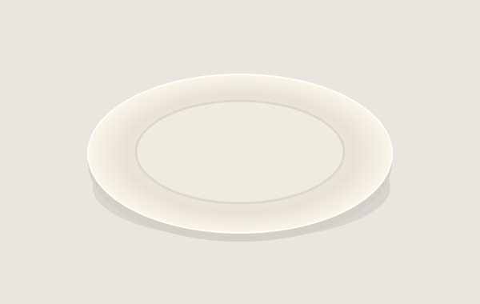

ONE PLATE. YOUR REAL TABLE.
Walk around
your place setting.
Place a single ceramic plate on your table using Apple’s AR viewer.
Checking this browser…
Opens Apple AR Quick Look · fixed 26 cm plate · native camera controls
Live placement is unavailable here. Open this page in Safari on an AR-capable iPhone or iPad. The preview below is 3D only, with no camera or world tracking.
In Apple’s viewer
- Choose AR and slowly scan a well-lit tabletop.
- Use Apple’s placement controls to position the plate. Drag to reposition; use two fingers to rotate.
- Move your phone around the table. Check whether the plate stays at the same spot.
Tracking lasts within the viewer session. This page cannot read the anchor or confirm that placement succeeded. Nothing is saved when you return.
Look at the plate
3D PREVIEW · NOT AR
The same procedural plate from POC 0.4. No product photography.
Compatibility & privacy
Quick Look uses Apple’s native AR tracking. It opens from Safari, but runs outside this page. A camera feed alone cannot keep an object fixed to a table.
- Apple AR handoff
- Checking…
- Browser WebXR immersive AR
- Checking…
This experiment uses Quick Look, including on browsers that may separately support WebXR. It does not implement a WebXR renderer.
We do not request camera frames, upload images, or store arrangements. The page downloads only its own code and plate asset. Apple manages camera permission and processing inside Quick Look.
If only Object mode appears, use Safari directly, check camera access, and try an AR-capable device. A glossy or featureless table may track poorly.
Download the 26 cm USDZ plate